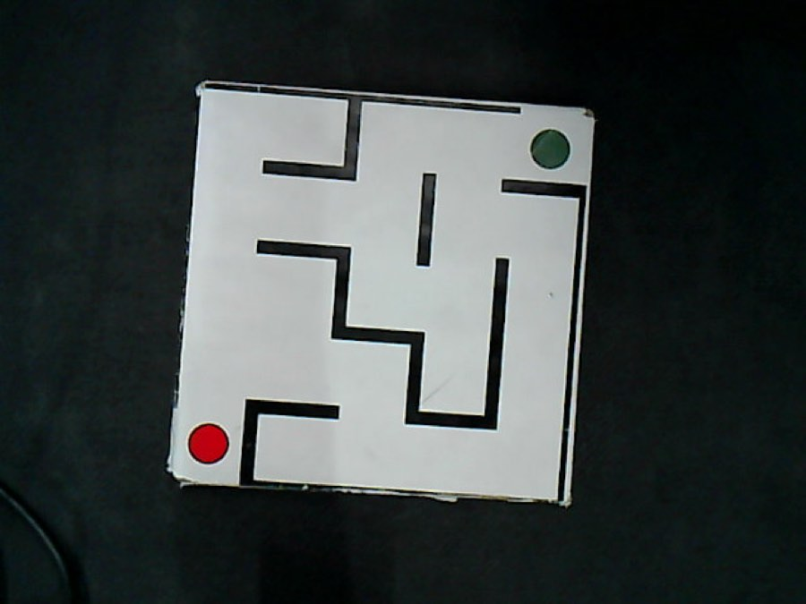
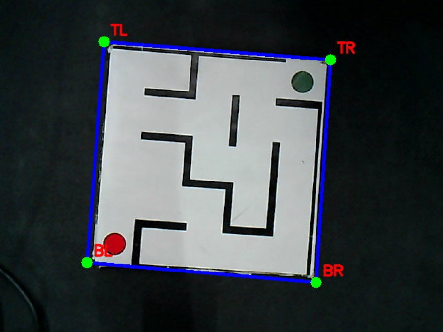
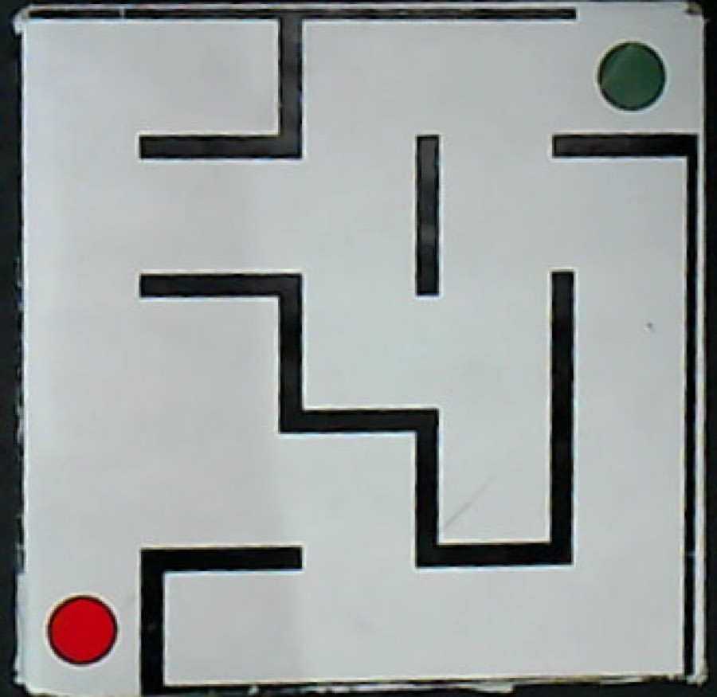
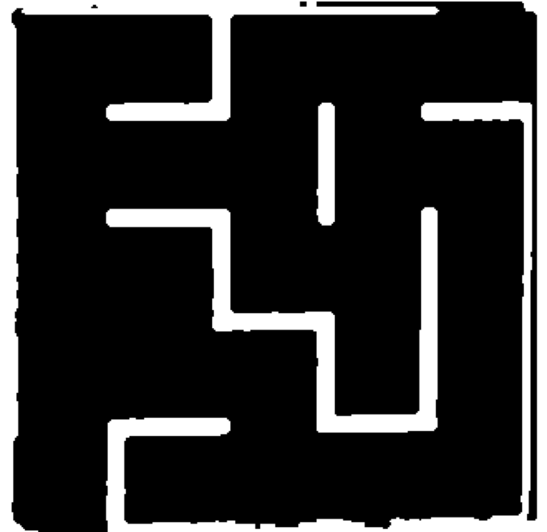
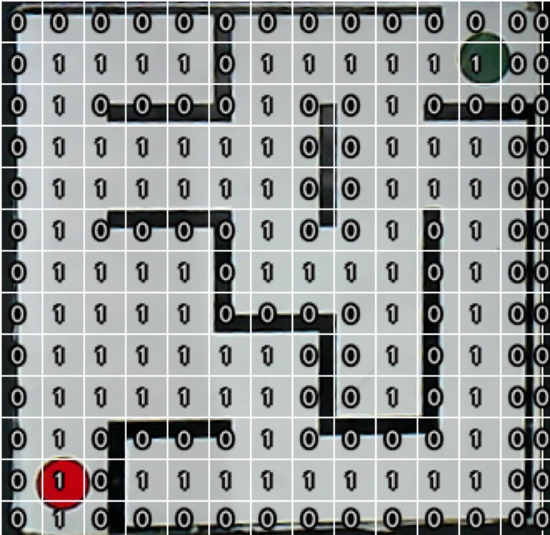
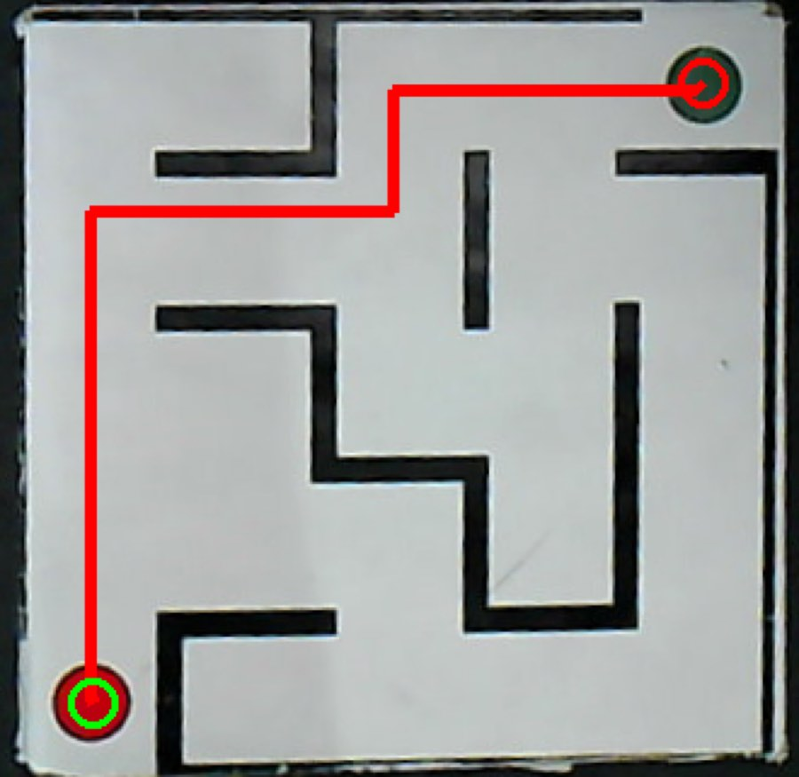
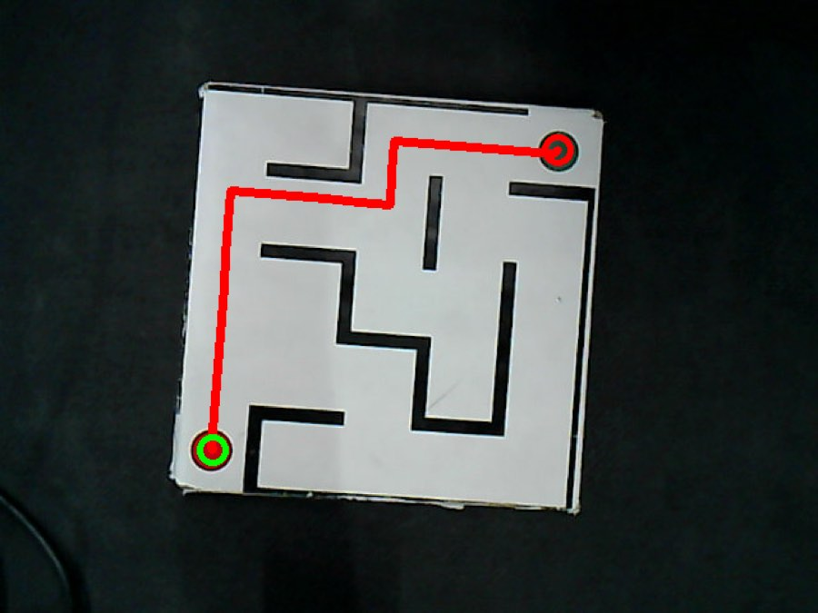

Course project · RAS 545 · Arizona State University · Spring 2026
Vision-based maze solving with a 4-DOF manipulator
The task
Two coupled problems. First, hand–eye calibration: recover the mapping between camera pixels and the robot's workspace. Second, a perception pipeline that finds the maze, works out a route through it, and hands the result back in robot coordinates for execution.
Background: robotic maze solving goes back to the Micromouse competitions of the late 1970s, where small autonomous robots map and run a maze as fast as possible. Advanced micromice use Flood Fill, but the underlying logic is unweighted graph traversal — which is what this project uses. Veritasium has a good history of the competition.
Calibration
Eight pixel–robot correspondences were collected by clicking features in the camera
frame and driving the end-effector to the same physical point. An affine matrix
\(\mathbf{M}\) is fitted with OpenCV's estimateAffine2D.
The interesting result is the model comparison. The partial affine model (similarity: rotation, uniform scale, translation) failed badly — mean reprojection error 65.7 mm, max 201.5 mm, with RANSAC discarding half the correspondences as outliers. The full affine model, with all six degrees of freedom, gave mean error 1.34 mm and max 4.83 mm, retaining every point.
| Model | Mean error | Max error | Inliers |
|---|---|---|---|
| Partial affine (similarity) | 65.7 mm | 201.5 mm | 4 / 8 |
| Full affine (6 DOF) | 1.34 mm | 4.83 mm | 8 / 8 |
The gap says something physical: a similarity transform cannot represent the setup because the camera's optical axis is not exactly perpendicular to the table, which introduces non-uniform scaling. The extra two degrees of freedom absorb it.
\[ \mathbf{M} = \begin{pmatrix} 0.00896 & -0.31200 & 365.553 \\ -0.30566 & 0.01009 & 111.621 \end{pmatrix} \]The perception pipeline
Six stages take a raw frame to an executable path.







Why BFS
On an unweighted occupancy grid every move costs the same, so breadth-first search returns a shortest path by construction — no heuristic to tune and no risk of a badly chosen one making the result suboptimal. For a grid this size the cost is irrelevant, so the simplest correct algorithm wins.
Outcome
The full pipeline solves a physical maze end to end, with the reconstructed path matching the intended traversal from the red start marker to the green end marker, and the arm tracing it on the table.